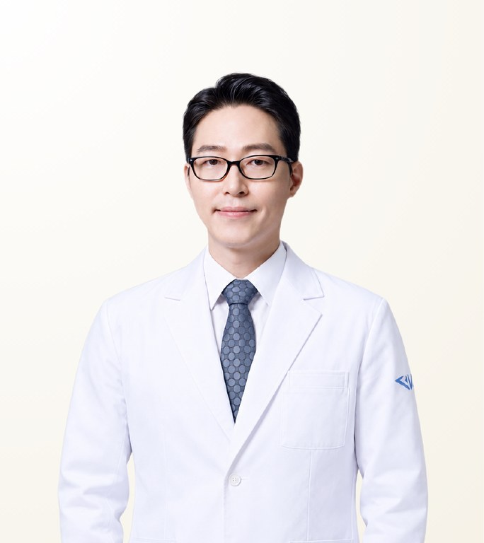

STMSTYLE 확인 의료진
김주연
Kim Joo-Youn · คิม จูยอน
에이비성형외과 · 성형외과 전문의
- 고난도 코재수술
- 늑연골 코재수술
- 1차 코성형
- 경력
- 25년 이상 경력
- 임상 경험
- 20,000건 이상
- 권장 체류 일정
- 기본 7박 8일(수술별 조정)
원장 소개
김주연 원장은 서울 에이비성형외과의 대표원장이자 성형외과 전문의로, 고난도 코재수술과 늑연골 코재수술로 알려져 있습니다. 25년 이상의 경력과 20,000건 이상의 수술 경험을 갖추고 있으며, 건국대학교병원 성형외과 외래교수로 활동하고 있습니다.
Case Expertise
고난도 코재수술
여러 차례 수술로 사용할 수 있는 연골이 부족하거나 조직이 얇아진 경우를 교정합니다. 이전 수술이 남긴 문제와 남은 조직 상태를 먼저 평가한 뒤 필요한 재료와 구조를 결정합니다.
늑연골 코재수술
환자 본인의 늑연골을 채취해 콧기둥과 코끝 구조를 다시 만듭니다. 재수술로 비중격·귀 연골이 부족하거나 강한 지지가 필요한 경우에 선택합니다.
1차 코성형
코 모양만 보지 않고 얼굴 전체의 비율 안에서 필요한 높이와 길이를 정하며, 피부 두께와 연골 상태에 맞춰 재료를 선택합니다.
그 외 진료 가능
사용 재료 · 장비
영상
진료 철학
재수술의 원인을 충분히 파악하고, 환자가 이해할 수 있도록 수술 방향을 상세히 설명한 뒤 결정하는 것을 중시합니다. 특히 코재수술에서는 단순한 모양 변경보다 이전 수술의 문제와 필요한 재료·구조를 함께 판단하며, 충분한 상담과 체계적인 사후관리를 중요하게 생각합니다.
— 김주연
STMSTYLE 평가
STMSTYLE은 다수의 환자를 통해 김주연 원장의 수술 과정과 결과를 경험했으며, 코재수술, 특히 늑연골이 필요한 고난도 케이스에서 우선 검토할 의사로 평가합니다. 상담 시 환자의 이야기를 충분히 듣고 수술 방향과 한계를 자세히 설명해 의문점을 해소한 뒤 수술을 결정하는 점이 강점입니다. 대형 병원의 시설, 환자 서비스, 사후관리까지 중요하게 보는 해외 환자에게 적합합니다.
STMSTYLE경력 및 학력
전체 경력 보기
면허·자격
- 성형외과 전문의
경력
- 현 에이비성형외과 대표원장
- 건국대학교병원 성형외과 외래교수
- 전 탑클래스성형외과 원장
- 전 디에이성형외과 원장
자주 묻는 질문
김주연 원장은 코재수술을 잘하나요?
고난도 코재수술은 김주연 원장의 주력 분야로, 25년 이상의 경력과 20,000건 이상의 수술 경험을 바탕으로 합니다. STMSTYLE은 다수의 환자가 김주연 원장에게 진료받는 과정을 함께하며 코재수술에서 우선 검토할 의사로 평가하고 있습니다. 최종 계획은 대면 상담 후 결정됩니다.
김주연 원장은 어떤 경우에 늑연골을 사용하나요?
김주연 원장은 이전 수술로 비중격·귀 연골이 부족하거나 강한 구조적 지지가 필요한 경우 환자 본인의 늑연골을 사용합니다. 이전 수술과 조직 상태를 평가한 뒤 재료와 구조를 선택합니다.
김주연 원장은 어떤 환자에게 가장 적합한가요?
김주연 원장은 여러 차례 코 수술을 받아 신중하게 계획된 재수술이 필요한 환자, 그리고 결정 전에 수술 방향과 한계를 자세히 이해하고 싶은 환자에게 적합합니다. STMSTYLE은 대형 병원의 시설과 사후관리를 중시하는 해외 환자에게도 잘 맞는 의사로 보고 있습니다.
김주연 원장에게 코성형을 받으려면 한국에 얼마나 머물러야 하나요?
기본 체류 기간은 7박 8일이며, 수술에 따라 조정됩니다. 에이비성형외과는 마취통증의학과 전문의, CCTV, 실시간 모니터링을 갖추고 있으며, 수술 후 단계별 회복 관리를 제공합니다.
김주연 원장이 직접 수술하나요? STMSTYLE을 통해 상담할 수 있나요?
네. 김주연 원장이 집도의로서 직접 수술합니다. 다수의 환자를 김주연 원장에게 연결해 온 STMSTYLE이 방콕에서 LINE 또는 WhatsApp으로 1차 상담을 연결합니다. 최종 결정은 원장과의 대면 상담 후 이루어집니다.
정보 출처
출처 및 확인 기록 보기
| 항목 | 출처 | 확인일 |
|---|---|---|
| 에이비성형외과 대표원장 및 성형외과 전문의 자격 | 병원 공식 정보 | 2026-08-31 |
| 건국대학교병원 외래교수, 전 탑클래스성형외과·디에이성형외과 원장 이력 | 공개 자료를 병원 공식 자료와 교차 확인 | 2026-08-31 |
| 원장 소개 및 상담 영상 | YouTube 공식 영상 | 2026-08-31 |
| 수술 과정, 결과 및 상담 | 대면 미팅과 다수 환자 연결을 통한 STMSTYLE 직접 확인 | 2026-08-31 |
확인 기록 · 2026-08-31
STMSTYLE은 장기간의 협업, 대면 미팅 및 상담, 다수 환자 연결, 병원 공식 정보와의 교차 확인을 통해 김주연 원장의 프로필을 확인했습니다.